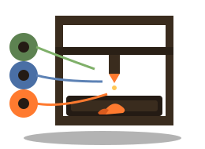

Commissions
Want your own character on the table? Send us the idea and we print it. Commissions run from a rescaled version of an existing sculpt to a fully custom model of your character sheet.

How a Commission Works
First we talk. You send references — a character sheet, a sketch, a description — and we agree on the sculpt, the size, and the filament or paint finish. Nothing starts printing until you have seen the plan.
Then the forge runs. Small pieces finish in a day or two; larger or custom-sculpted pieces take up to two weeks. You get photos of the finished print before it is packed, and a redo is free if the print arrives flawed.
Estimate Your Order
The estimate above is a starting point. Final quotes can shift with sculpting time, but we confirm everything with you before the printer warms up.